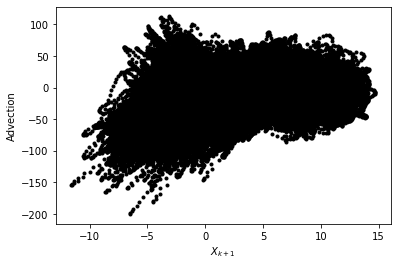
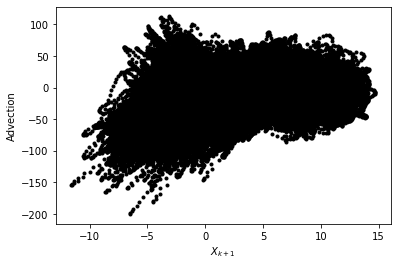
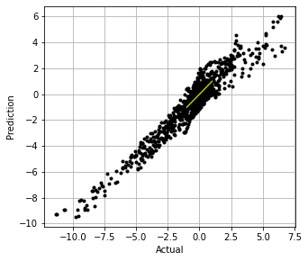
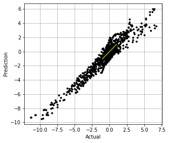
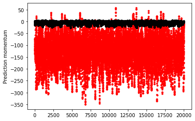
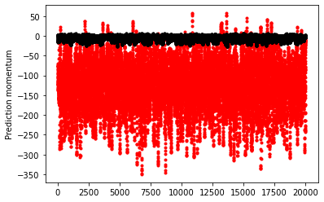
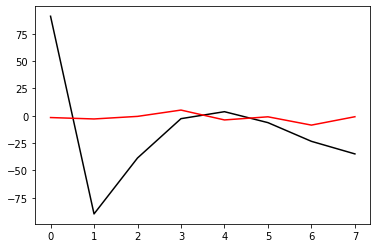
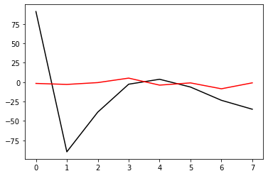

Using neural networks to parameterize advection in L96
Contents
Using neural networks to parameterize advection in L96¶
import matplotlib.pyplot as plt
import numpy as np
from IPython.display import HTML
from L96_model import (
L96,
RK2,
RK4,
EulerFwd,
L96_eq1_xdot,
integrate_L96_2t,
)
from matplotlib.animation import FuncAnimation
# In this exercise we will be looking at conservation properties in L96, which requires a high-order numerical scheme.
time_method = RK4
Introduction¶
We are only going to use the single equation model from Lorenz (1996), or equation 3.1:
The reason we do this is because the advection term has a much larger control on the stability of the system than the scale-interaction term. It is fairly difficult to learn a model for the sub-grid scale term that causes L96 to go unstable so long as the timestep is sufficient to keep the advection term stable.
We still want to to look into the stability of a learned parameterization, but to explore the stability in more detail we are going to focus on learning a neural-network for the advection.
Building a 1d and 2d version of the single-equation L96 model:¶
The ‘1d’ in time, or advectionless version of L96 reduces to:
the steady state solution is simply:
and the time-dependent solution is an exponential:
We are going to generate both 2d (w/ advection) and 1d (w/o advection) versions of the L96 model. The 2d model will then be used as training data to build a non-local neural network that can reproduce the effect of including the advection term.
# - This is a standard GCM class including a polynomial parameterization in rhs of equation for tendency.
# In this experiment we will not be using the parameterization in this class but have left it for generality.
class GCM:
def __init__(self, F, parameterization, time_stepping=RK4):
self.F = F
self.parameterization = parameterization
self.time_stepping = time_stepping
def rhs(self, X, param):
return L96_eq1_xdot(X, self.F) + self.parameterization(param, X, self.F)
def __call__(self, X0, dt, nt, param=[0]):
# X0 - initial conditions, dt - time increment, nt - number of forward steps to take
# param - parameters of our closure
time, hist, X = (
dt * np.arange(nt + 1),
np.zeros((nt + 1, len(X0))) * np.nan,
X0.copy(),
)
hist[0] = X
for n in range(nt):
X = self.time_stepping(self.rhs, dt, X, param)
hist[n + 1], time[n + 1] = X, dt * (n + 1)
return hist, time
# - This is the same as the GCM with one notable exception.
# We have set the advection flag to False in the RHS of the L96 equation.
class GCM_1d:
def __init__(self, F, parameterization, time_stepping=time_method):
self.F = F
self.parameterization = parameterization
self.time_stepping = time_stepping
def rhs(self, X, param):
return L96_eq1_xdot(X, self.F, advect=False) + self.parameterization(
param, X, self.F
)
def __call__(self, X0, dt, nt, param=[0]):
# X0 - initial conditions, dt - time increment, nt - number of forward steps to take
# param - parameters of our closure
time, hist, X = (
dt * np.arange(nt + 1),
np.zeros((nt + 1, len(X0))) * np.nan,
X0.copy(),
)
hist[0] = X
for n in range(nt):
X = self.time_stepping(self.rhs, dt, X, param)
hist[n + 1], time[n + 1] = X, dt * (n + 1)
return hist, time
Sample configuration¶
First we will run the 2d and 1d version of the model with a modest forcing of \(F=10\).
We are going to try to simulate the effect of climate model drift on parameter space by running the same model but with \(F=20\).
# Chose a modest forcing and simulate for 100 cycles
Forcing, dt, T = 10, 0.01, 100
Forcing_x10 = 20 # Forcing*10
# Choose an random set of initial conditions
b = 10
init_cond = b * np.random.randn(8)
# ----------------------------------------------------------------
# We create the template 2d GCM here with the polynomial parameterization
# this model will be used to generate training data to learn the advection term.
naive_parameterization = lambda param, X, F: np.polyval(param, X)
gcm_2d = GCM(Forcing, naive_parameterization)
# ----------------------------------------------------------------
# We also create a super GCM for simulation with the forcing of 100.
# This will be used as the truth when we test the ability of the 1d model with the neural network to
# work outside of the parmameter space it was trained.
gcm_2d_x10 = GCM(Forcing_x10, naive_parameterization)
# ----------------------------------------------------------------
# Finally,we build the 1d GCM including the polynomial parameterization,
# and we create the corresponding super GCM with forcing squared.
gcm_1d = GCM_1d(Forcing, naive_parameterization)
gcm_1d_x10 = GCM_1d(Forcing_x10, naive_parameterization)
# Running the 2d and 1d versions of the GCM and GCM with F=100 ("_x10")
x2d, t2d = gcm_2d(
init_cond,
dt,
int(T / dt),
[
0.0,
],
)
x2d_x10, t2d_x10 = gcm_2d_x10(
init_cond,
dt,
int(T / dt),
[
0.0,
],
)
x1d, t1d = gcm_1d(
init_cond,
dt,
int(T / dt),
[
0.0,
],
)
x1d_x10, t1d_x10 = gcm_1d_x10(
init_cond,
dt,
int(T / dt),
[
0.0,
],
)
Metrics:¶
We are going to track the momentum and energy of L96 via the following metrics:
Energy:¶
These metrics are chosen to track the system. We are looking for a conservative property of the L96 system. It turns out in the single equation form of the L96 problem one of these two metrics is conserved by the advection process, which is the energy like term.
for tup in [2, T]:
F, ax = plt.subplots(1, 2, figsize=(10, 4))
a = ax.ravel()[0]
a.plot(t1d, np.sum(x1d, axis=1), label="1d", color="r", linewidth=2)
a.plot(t2d, np.sum(x2d, axis=1), label="2d", color="b", linewidth=2)
a.legend()
a.grid(True)
a.set_title("L96 momentum")
a.set_xlabel("t")
a.set_ylabel(r"$\sum_k X_k$")
a.set_xlim(0, tup)
a = ax.ravel()[1]
a.plot(t1d, np.sum(x1d**2, axis=1), label="1d", color="r", linewidth=2)
a.plot(t2d, np.sum(x2d**2, axis=1), label="2d", color="b", linewidth=2)
a.legend()
a.grid(True)
a.set_title("L96 energy")
a.set_xlabel("t")
a.set_ylabel(r"$\sum_k X_k^2$")
a.set_xlim(0, tup)
F.tight_layout();


Demo: Conservation of energy in L96¶
To demonstrate the conservation of energy in L96 advection we build a model with 0 forcing and 0 damping.
Note that the cyan line is an experiment only undergoing forcing by the advection term. The momentum is clearly not conserved, but the energy is.
# Zero the forcing
Forcing_demo = 0
# Zero the damping via a linear parameterization term:
P_nodamp = [1.0, 0.0]
# Running the 2d and 1d versions of the GCM and GCM with squared forcing ("s")
gcm_2d_demo = GCM(Forcing_demo, naive_parameterization)
# The parameterization here is countering the decay term to demonstrate the conservation of this system
x2d_demo, t2d_demo = gcm_2d_demo(init_cond, dt, int(T / dt), P_nodamp)
for tup in [2, T]:
F, ax = plt.subplots(1, 2, figsize=(10, 4))
a = ax.ravel()[0]
a.plot(
t2d_demo,
np.sum(x2d_demo, axis=1),
label="2d, F=0 no damp",
color="c",
linewidth=2,
)
a.plot(t2d, np.sum(x2d, axis=1), label="2d, F=10", color="b", linewidth=2)
a.legend()
a.grid(True)
a.set_title("L96 momentum")
a.set_xlabel("t")
a.set_ylabel(r"$\sum_k X_k$")
a.set_xlim(0, tup)
a = ax.ravel()[1]
a.plot(
t2d_demo,
np.sum(x2d_demo**2, axis=1),
label="2d, F=0 no damp",
color="c",
linewidth=2,
)
a.plot(t2d, np.sum(x2d**2, axis=1), label="2d, F=10", color="b", linewidth=2)
a.legend()
a.grid(True)
a.set_title("L96 energy")
a.set_xlabel("t")
a.set_ylabel(r"$\sum_k X_k^2$")
a.set_xlim(0, tup)
F.tight_layout();


Building a dataset of advection tendencies to learn¶
In the next section we are going to create a dataset of advection tendencies to learn
# The first set of data to learn is built with the standard forcing
obs = gcm_2d
model = gcm_1d
N = 20000
X = []
Xm1 = []
Xm2 = []
Xp1 = []
Adv = []
# randomize the initial condition and run 1000 time-step spin up with the real world model
init_condr = 10 * np.random.randn(8)
x_2, _ = gcm_2d(
init_condr,
0.01,
1000,
[
0.0,
],
)
for ti in range(N):
# Set the initial condition from the spin up/2d model
init_condr_up = x_2[-1, :]
# Real world values
x_2, _ = obs(
init_condr_up,
0.01,
1,
[
0.0,
],
)
# Simple model values
x_1, _ = model(
init_condr_up,
0.01,
1,
[
0.0,
],
)
# This is the difference in the tendency term due to neglecting 2d processes per time-step
Adv.append((x_2[-1, :] - x_1[-1, :]).ravel() / dt)
# Storing the state variable and its rolled forms for plotting and learning convenience
X.append(x_1[-1, :].ravel())
Xm1.append(np.roll(x_1[-1, :], 1).ravel())
Xm2.append(np.roll(x_1[-1, :], 2).ravel())
Xp1.append(np.roll(x_1[-1, :], -1).ravel())
X = np.array(X)
Xm1 = np.array(Xm1)
Xm2 = np.array(Xm2)
Xp1 = np.array(Xp1)
Adv = np.array(Adv)
# We use a second set of learning data with the F=20 forcing
obs = gcm_2d_x10
model = gcm_1d_x10
X_x10 = []
Xm1_x10 = []
Xm2_x10 = []
Xp1_x10 = []
Adv_x10 = []
# randomize the initial condition and run 1000 time-step spin up with the real world model
init_condr = 10 * np.random.randn(8)
x_2, _ = gcm_2d(
init_condr,
0.01,
1000,
[
0.0,
],
)
for ti in range(N):
# Set the initial condition from the spin up/2d model
init_condr_up = x_2[-1, :]
# Real world values
x_2, _ = obs(
init_condr_up,
0.01,
1,
[
0.0,
],
)
# Simple model values
x_1, _ = model(
init_condr_up,
0.01,
1,
[
0.0,
],
)
# This is the difference in the tendency term due to neglecting 2d processes per time-step
Adv_x10.append((x_2[-1, :] - x_1[-1, :]).ravel() / dt)
# Storing the state variable and its rolled forms for plotting and learning convenience
X_x10.append(x_1[-1, :].ravel())
Xm1_x10.append(np.roll(x_1[-1, :], 1).ravel())
Xm2_x10.append(np.roll(x_1[-1, :], 2).ravel())
Xp1_x10.append(np.roll(x_1[-1, :], -1).ravel())
X_x10 = np.array(X_x10)
Xm1_x10 = np.array(Xm1_x10)
Xm2_x10 = np.array(Xm2_x10)
Xp1_x10 = np.array(Xp1_x10)
Adv_x10 = np.array(Adv_x10)
Choosing a parameter to parameterize from¶
If we were simply looking at data and knew that the advection term was a missing force, we might start by looking at correlations with \(X_k\) values, but we would quickly relize that this is not effective.
Even taking part of the actual advection term does not yield a useful feature parameter.
In principle we should be able to learn a parameterization with all combinations of polynomials including all \(X_k\)’s, which should yield something close to the right answer.
plt.figure()
plt.plot(X, Adv, "k.")
plt.xlabel("$X_{k}$")
plt.ylabel("Advection")
plt.figure()
plt.plot(Xm1, Adv, "k.")
plt.xlabel("$X_{k-1}$")
plt.ylabel("Advection")
plt.figure()
plt.plot(Xp1, Adv, "k.")
plt.xlabel("$X_{k+1}$")
plt.ylabel("Advection")
plt.figure()
plt.plot(Xm2 - Xp1, Adv, "k.")
plt.xlabel("$X_{k-2}-X_{k+1}$")
plt.ylabel("Advection")
Text(0, 0.5, 'Advection')

 


Let’s now just assume that we knew the form of the advection term. We now get something that looks like a 1:1 linear relationship between the observed advection term and the correct feature parameter. It is not perfect because the values we are using for \(X_k\) are not consistent with the RK4 time stepping (if we used forward Euler we would get a perfit fit).
# We are going to assume we know the feature variable that we need to train the model.
# However, because of sampling across a time-step we will not fit a perfect 1:1,
# we end up with something very close to 1:1, but we will use a higher order polynomial that will
# fail when used outside the training data.
# First we will tune with the original F=10 output
plt.figure(figsize=(5, 4))
Feature = -Xm1 * (np.array(Xm2) - np.array(Xp1))
plt.plot(Feature, Adv, "r.")
plt.xlabel("$X_{k-1}(X_{k-2}-X_{k+1})$")
plt.ylabel("Advection tendency")
# This parameterization might fail when used outside of the training data.
# Note if we used the Forward Euler timestepping we would get closer to a 1:1 fit for the data.
P = np.polyfit(np.array(Feature).ravel(), np.array(Adv).ravel(), 1)
print("Fit (slope/bias): ", P)
FS = [-200, 200]
plt.plot(FS, np.polyval(P, FS), "g-", label="polynomial parameterization")
plt.plot(FS, FS, "k--", label="1:1")
plt.xlim(FS)
plt.ylim(FS)
plt.grid(True)
Fit (slope/bias): [ 1.00382094 -0.08116806]
# Create a new 1d GCM with a parameterization for the advection based on the known advection parameter
advection_parameterization = lambda param, X, F: np.polyval(
param, -np.roll(X, 1) * (np.roll(X, 2) - np.roll(X, -1))
)
gcm_1d_padv = GCM_1d(Forcing, advection_parameterization)
gcm_1d_padv_x10 = GCM_1d(Forcing_x10, advection_parameterization)
# Here is the 1d GCM with the learned advection via the linear parameterization
xplinear, tplinear = gcm_1d_padv(init_cond, dt, int(T / dt), P)
# And the same 1d GCM applied out of sample
xplinear_x10, tplinear_x10 = gcm_1d_padv_x10(init_cond, dt, int(T / dt), P)
def CompExps(Exp1, ExpN):
# Exp1 - reference experiment list
# ExpN - list of comparison experiments
try:
T1 = Exp1[0]
X1 = Exp1[1]
L1 = Exp1[2]
F, ax = plt.subplots(1, 2, figsize=(10, 4))
a = ax.ravel()[0]
a.plot(T1, np.sum(X1, axis=1), label=L1, color="k", linewidth=3)
a = ax.ravel()[1]
a.plot(T1, np.sum(X1**2, axis=1), label=L1, color="k", linewidth=3)
F2, ax2 = plt.subplots(1, figsize=(5, 4))
for Exp in ExpN:
TN = Exp[0]
XN = Exp[1]
LN = Exp[2]
a = ax.ravel()[0]
a.plot(TN, np.sum(XN, axis=1), label=LN, linewidth=2)
a = ax.ravel()[1]
a.plot(TN, np.sum(XN**2, axis=1), label=LN, linewidth=2)
_X = []
_Y = []
for ii in range(1, 100, 1):
_X.append(np.percentile(np.sum(X1[int(5 // dt) :] ** 2, axis=1), ii))
_Y.append(np.percentile(np.sum(XN[int(5 // dt) :] ** 2, axis=1), ii))
ax2.plot(_X, _Y, ".-", label=LN)
for ii in range(2):
a = ax.ravel()[ii]
a.legend()
a.grid(True)
ax[0].set(ylabel=r"$\sum_k X_k$", xlabel=r"$t$")
ax[1].set(ylabel=r"$\sum_k X_k^2$", xlabel=r"$t$")
F.tight_layout()
ax2.grid(True)
ax2.set(
xlabel="e 2d model",
ylabel="e 1d model w/ param",
title="q-q plot of energy in 2d and parameterized model",
)
LIM = np.nanmax(list(_X) + list(_Y))
ax2.set_xlim(0, LIM * 1.1)
ax2.set_ylim(0, LIM * 1.1)
ax2.plot([0, LIM], [0, LIM], "y-")
pass
except:
pass
# This (should) learn a stable 'parameterization' for the advection that is very close to the real advection term.
CompExps(
[t2d, x2d, "2d"],
[
[tplinear, xplinear, "1d w/ linear"],
],
)

# It even extrapolates to the F=20 model
CompExps(
[t2d_x10, x2d_x10, "2d"],
[
[tplinear_x10, xplinear_x10, "1d w/ linear"],
],
)


What if we chose the wrong feature?¶
It turns out you can find features that are approximately correct and build a decent model for the advection
# Now we use a feature that is wrong to train the model
plt.figure()
Feature = -(np.array(Xm2) - np.array(Xp1) * np.array(Xm1))
plt.plot(Feature, Adv, "r.")
plt.xlabel("$(X_{k-1}-X_{k+1})$")
plt.ylabel("Advection tendency/Forcing")
P_wrong = np.polyfit(np.array(Feature).ravel(), np.array(Adv).ravel(), 1)
FS = np.sort(np.array(Feature).ravel())
plt.plot(FS, np.polyval(P_wrong, FS), "g-", label="polynomial parameterization");

# Create a new 1d GCM with a 2d parameterization
advection_parameterization_wrong = lambda param, X, F: np.polyval(
param, -(np.roll(X, 2) - np.roll(X, -1) * np.roll(X, 1))
)
gcm_1d_padv_wrong = GCM_1d(Forcing, advection_parameterization_wrong)
# Here is the 1d GCM with the learned advection
x_wrongp, t_wrongp = gcm_1d_padv_wrong(init_cond, dt, int(T / dt), P_wrong)
# This goes unstable very quickly.
# The neural network thus must be trained pretty well to avoid these instabilities.
CompExps(
[t2d, x2d, "2d"],
[
[t_wrongp, x_wrongp, "1d w/ wrong linear"],
],
)
/tmp/ipykernel_2236/3080806922.py:3: RuntimeWarning: overflow encountered in multiply
param, -(np.roll(X, 2) - np.roll(X, -1) * np.roll(X, 1))
/usr/share/miniconda/envs/L96M2lines/lib/python3.9/site-packages/numpy/lib/polynomial.py:771: RuntimeWarning: invalid value encountered in multiply
y = y * x + p[i]

Using the wrong feature gave us a very unstable model with advection that does not work.
In the following, we will try to learn the advection from a neural network. This result shows that we need to do something reasonable to have a stable system.
Using the 3-layer non-local neural network¶
Now we can forget about neading to know the right form of the advection term. We are instead just going to throw the information from the advection scheme to the non-local neural network and let it learn the advection for itself.
These follow the templates from the exercise led by Janni in week 4.
I’m quite new to neural networks, so please let me know if you see any obvious mistakes in my approach!
import torch
import torch.nn.functional as F
import torch.utils.data as Data
import torchvision
from torch import nn, optim
from torch.autograd import Variable
np.random.seed(14) # For reproducibility
torch.manual_seed(14) # For reproducibility
<torch._C.Generator at 0x7fb0f6d61250>
I’m going to start by scaling the data so that it is approximately order 1.¶
It looks like we can scaling \(X\) and the advection with the forcing and forcing squared, respectively (we will come back to this assumption).
plt.figure()
plt.plot(X, Adv, "k.")
plt.xlabel("$X_k$")
plt.ylabel("$Adv_k$")
# for F=10
X_F = X / Forcing
Adv_F = Adv / Forcing**2
print("Advection RMS:", np.sqrt(np.mean(Adv**2)))
print("X RMS:", np.sqrt(np.mean(X**2)))
plt.figure()
plt.plot(X_F, Adv_F, "k.")
plt.xlabel("$X_k/F$")
plt.ylabel("$Adv_k/F^2$")
print("Scaled Advection RMS:", np.sqrt(np.mean(Adv_F**2)))
print("Scaled X RMS:", np.sqrt(np.mean(X_F**2)))
# Split into 80% training and 20% testing.
L = int(len(X) * 0.8)
# Create non local training data
# Define a data loader (8 inputs, 8 outputs)
# Define our X,Y pairs (state, subgrid tendency) for the linear regression local network.local_torch_dataset = Data.TensorDataset(
torch_dataset = Data.TensorDataset(
torch.from_numpy(np.array(X_F[:L])).double(),
torch.from_numpy(np.array(Adv_F[:L])).double(),
)
BATCH_SIZE = 1024 # Number of sample in each batch
loader = Data.DataLoader(dataset=torch_dataset, batch_size=BATCH_SIZE, shuffle=True)
print("N training data: ", len(X_F[:L]))
print("N testing data: ", len(X_F[L:]))
# Define a test dataloader (8 inputs, 8 outputs)
torch_dataset_test = Data.TensorDataset(
torch.from_numpy(np.array(X_F[L:])).double(),
torch.from_numpy(np.array(Adv_F[L:])).double(),
)
loader_test = Data.DataLoader(
dataset=torch_dataset_test, batch_size=BATCH_SIZE, shuffle=True
)
Advection RMS: 28.704589675039436
X RMS: 5.151590373050544
Scaled Advection RMS: 0.2870458967503943
Scaled X RMS: 0.5151590373050544
N training data: 16000
N testing data: 4000


# define network structure in pytorch
import torch.nn.functional as FF
class Net_ANN(nn.Module):
def __init__(self):
super(Net_ANN, self).__init__()
self.linear1 = nn.Linear(8, 16) # 8 inputs, 16 neurons for first hidden layer
self.linear2 = nn.Linear(16, 16) # 16 neurons for second hidden layer
self.linear3 = nn.Linear(16, 8) # 8 outputs
# self.lin_drop = nn.Dropout(0.1) #regularization method to prevent overfitting.
def forward(self, x):
x = FF.relu(self.linear1(x))
x = FF.relu(self.linear2(x))
x = self.linear3(x)
return x
def train_model(net, criterion, trainloader, optimizer):
net.train()
test_loss = 0
for step, (batch_x, batch_y) in enumerate(trainloader): # for each training step
b_x = Variable(batch_x) # Inputs
b_y = Variable(batch_y) # outputs
if (
len(b_x.shape) == 1
): # If is needed to add a dummy dimension if our inputs are 1D (where each number is a different sample)
prediction = torch.squeeze(
net(torch.unsqueeze(b_x, 1))
) # input x and predict based on x
else:
prediction = net(b_x)
loss = criterion(prediction, b_y) # Calculating loss
optimizer.zero_grad() # clear gradients for next train
loss.backward() # backpropagation, compute gradients
optimizer.step() # apply gradients to update weights
def test_model(net, criterion, trainloader, optimizer, text="validation"):
net.eval() # Evaluation mode (important when having dropout layers)
test_loss = 0
with torch.no_grad():
for step, (batch_x, batch_y) in enumerate(
trainloader
): # for each training step
b_x = Variable(batch_x) # Inputs
b_y = Variable(batch_y) # outputs
if (
len(b_x.shape) == 1
): # If is needed to add a dummy dimension if our inputs are 1D (where each number is a different sample)
prediction = torch.squeeze(
net(torch.unsqueeze(b_x, 1))
) # input x and predict based on x
else:
prediction = net(b_x)
loss = criterion(prediction, b_y) # Calculating loss
test_loss = test_loss + loss.data.numpy() # Keep track of the loss
test_loss /= len(trainloader) # dividing by the number of batches
# print(len(trainloader))
print(text + " loss:", test_loss)
return test_loss
criterion = torch.nn.MSELoss() # MSE loss function
torch.manual_seed(14) # For reproducibility
nn_3l = Net_ANN().double()
n_epochs = 10 # Number of epocs could be increased
optimizer = optim.Adam(nn_3l.parameters(), lr=0.03)
validation_loss = list()
train_loss = list()
# time0 = time()
for epoch in range(1, n_epochs + 1):
train_model(nn_3l, criterion, loader, optimizer)
train_loss.append(test_model(nn_3l, criterion, loader, optimizer, "train"))
validation_loss.append(test_model(nn_3l, criterion, loader_test, optimizer))
plt.plot(train_loss, "b", label="training loss")
plt.plot(validation_loss, "r", label="validation loss")
plt.legend();
train loss: 0.04611122970350917
validation loss: 0.04703420129573855
train loss: 0.03151111468930701
validation loss: 0.03398608098033736
train loss: 0.024846277449084762
validation loss: 0.02676512853468617
train loss: 0.0202150135277631
validation loss: 0.023170476315682486
train loss: 0.016600997028287073
validation loss: 0.018930092661275228
train loss: 0.015398979362001283
validation loss: 0.01782976484069731
train loss: 0.014213350748585273
validation loss: 0.017142599877548063
train loss: 0.013735208480869596
validation loss: 0.01690882611645146
train loss: 0.013247141261775522
validation loss: 0.01602196760430019
train loss: 0.013088000831508037
validation loss: 0.015507752942956034
# Look how network does for the tendencies
preds22 = nn_3l(torch.from_numpy(np.array(X_F)).double())
plt.figure()
plt.plot(preds22.detach().numpy()[0:1000, 2], label="NN Predicted values")
plt.plot(Adv_F[:1000, 2], label="True values")
plt.legend()
plt.xlim(0, 200)
plt.ylabel("scaled tendency")
plt.xlabel("time step")
plt.figure(figsize=(5, 4.5))
plt.plot(Adv_F[:1000, 2], preds22.detach().numpy()[0:1000, 2], "k.")
plt.xlabel("Actual")
plt.ylabel("Prediction")
plt.grid(True)
plt.plot([-1, 1], [-1, 1], "y-")
pass
Xt = init_cond
Advr = -np.roll(Xt, 1) * (np.roll(Xt, 2) - np.roll(Xt, -1))
nnAdv = nn_3l(torch.from_numpy(np.array(Xt / Forcing)).double()).detach().numpy()
plt.figure()
plt.plot(Advr, "k-", label="Right")
plt.plot(nnAdv * Forcing**2, "r-", label="neural network")
plt.xlabel(r"$k$")
plt.ylabel("Advection tendency")
plt.legend()
<matplotlib.legend.Legend at 0x7fb0f45f32b0>


# - a GCM class including a neural network parameterization in rhs of equation for tendency
# The advection will be set to False
class GCM_network:
def __init__(self, F, network, time_stepping=time_method):
self.F = F
self.network = network
self.time_stepping = time_stepping
def rhs(self, X, param):
if self.network.linear1.in_features == 1:
X_torch = torch.from_numpy(X / self.F).double()
X_torch = torch.unsqueeze(X_torch, 1)
else:
X_torch = torch.from_numpy(np.expand_dims(X / self.F, 0)).double()
return L96_eq1_xdot(
X,
self.F + self.F**2 * np.squeeze(self.network(X_torch).data.numpy()),
advect=False,
) # Adding NN parameterization
def __call__(self, X0, dt, nt, param=[0]):
# X0 - initial conditions, dt - time increment, nt - number of forward steps to take
# param - parameters of our closure
time, hist, X = (
dt * np.arange(nt + 1),
np.zeros((nt + 1, len(X0))) * np.nan,
X0.copy(),
)
hist[0] = X
for n in range(nt):
X = self.time_stepping(self.rhs, dt, X, param)
hist[n + 1], time[n + 1] = X, dt * (n + 1)
return hist, time
# Run a test with the parameterization
# It takes some time, but usually the network goes unstable eventually
# F=10 model
gcm_nn = GCM_network(Forcing, nn_3l)
xnn, tnn = gcm_nn(init_cond, dt, int(100 / (dt)), nn_3l)
CompExps(
[t2d, x2d, "2d"],
[
[tnn, xnn, "1d w/ neural network"],
],
)
# Try to train the data with slightly higher forcing (will give larger range of advection tendencies to learn)
plt.figure()
plt.plot(X, Adv, "k.")
plt.xlabel("$X_k$")
plt.ylabel("$Adv_k$")
# for F=20
X_F = X_x10 / Forcing_x10
Adv_F = Adv_x10 / Forcing_x10**2
print("Advection RMS:", np.sqrt(np.mean(Adv**2)))
print("X RMS:", np.sqrt(np.mean(X**2)))
plt.figure()
plt.plot(X_F, Adv_F, "k.")
plt.xlabel("$X_k/F$")
plt.ylabel("$Adv_k/F^2$")
print("Scaled Advection RMS:", np.sqrt(np.mean(Adv_F**2)))
print("Scaled X RMS:", np.sqrt(np.mean(X_F**2)))
# Split into 80% training and 20% testing.
L = int(len(X) * 0.8)
# Create non local training data
# Define a data loader (8 inputs, 8 outputs)
# Define our X,Y pairs (state, subgrid tendency) for the linear regression local network.local_torch_dataset = Data.TensorDataset(
torch_dataset = Data.TensorDataset(
torch.from_numpy(np.array(X_F[:L])).double(),
torch.from_numpy(np.array(Adv_F[:L])).double(),
)
BATCH_SIZE = 1024 # Number of sample in each batch
loader = Data.DataLoader(dataset=torch_dataset, batch_size=BATCH_SIZE, shuffle=True)
print("N training data: ", len(X_F[:L]))
print("N testing data: ", len(X_F[L:]))
# Define a test dataloader (8 inputs, 8 outputs)
torch_dataset_test = Data.TensorDataset(
torch.from_numpy(np.array(X_F[L:])).double(),
torch.from_numpy(np.array(Adv_F[L:])).double(),
)
loader_test = Data.DataLoader(
dataset=torch_dataset_test, batch_size=BATCH_SIZE, shuffle=True
)
Advection RMS: 28.704589675039436
X RMS: 5.151590373050544
Scaled Advection RMS: 0.1918315140344679
Scaled X RMS: 0.40859937221120934
N training data: 16000
N testing data: 4000


torch.manual_seed(14) # For reproducibility
nn_3l_x10 = Net_ANN().double()
n_epochs = 10 # Number of epocs
optimizer = optim.Adam(nn_3l_x10.parameters(), lr=0.03)
validation_loss = list()
train_loss = list()
# time0 = time()
for epoch in range(1, n_epochs + 1):
train_model(nn_3l_x10, criterion, loader, optimizer)
train_loss.append(test_model(nn_3l_x10, criterion, loader, optimizer, "train"))
validation_loss.append(test_model(nn_3l_x10, criterion, loader_test, optimizer))
plt.plot(train_loss, "b", label="training loss")
plt.plot(validation_loss, "r", label="validation loss")
plt.legend()
# Look how network does for the tendencies
preds22 = nn_3l_x10(torch.from_numpy(np.array(X_F)).double())
plt.figure()
plt.plot(preds22.detach().numpy()[0:1000, 2], label="NN Predicted values")
plt.plot(Adv_F[:1000, 2], label="True values")
plt.legend()
plt.xlim(0, 200)
plt.ylabel("scaled tendency")
plt.xlabel("time step")
plt.figure(figsize=(5, 4.5))
plt.plot(Adv_F[:1000, 2], preds22.detach().numpy()[0:1000, 2], "k.")
plt.xlabel("Actual")
plt.ylabel("Prediction")
plt.grid(True)
plt.plot([-1, 1], [-1, 1], "y-")
pass
Xt = init_cond
Advr = -np.roll(Xt, 1) * (np.roll(Xt, 2) - np.roll(Xt, -1))
nnAdv = nn_3l_x10(torch.from_numpy(np.array(Xt / Forcing)).double()).detach().numpy()
plt.figure()
plt.plot(Advr, "k-", label="Right")
plt.plot(nnAdv * Forcing_x10**2, "r-", label="neural network")
plt.xlabel(r"$k$")
plt.ylabel("Advection tendency")
plt.legend()
train loss: 0.02551256173176333
validation loss: 0.02844730883673605
train loss: 0.017620045351629976
validation loss: 0.01976755992443973
train loss: 0.012809207995739941
validation loss: 0.014724844265751314
train loss: 0.010005487970301928
validation loss: 0.01160124498849664
train loss: 0.00865660495450296
validation loss: 0.010116701576376138
train loss: 0.007965217039906314
validation loss: 0.009382159926858277
train loss: 0.007475853923651369
validation loss: 0.008863445265539109
train loss: 0.007033896179723796
validation loss: 0.00840075080924947
train loss: 0.006738521834963222
validation loss: 0.007989244934739683
train loss: 0.00650419402754329
validation loss: 0.007551589948416603
<matplotlib.legend.Legend at 0x7fb0eec83c40>
# Run a test with the parameterization built from F=20
# Usually the neural network resulting is much more stable, since it is trained for a wider range of conditions.
# F=10 model
gcm_nn = GCM_network(Forcing, nn_3l_x10)
xnn, tnn = gcm_nn(init_cond, dt, int(100 / (dt)), nn_3l_x10)
CompExps(
[t2d, x2d, "2d"],
[
[tnn, xnn, "1d w/ neural network"],
],
)


# F=20 model fails still
gcm_nn_x10 = GCM_network(Forcing_x10, nn_3l_x10)
xnn_x10, tnn_x10 = gcm_nn_x10(init_cond, dt, int(100 / (dt)), nn_3l_x10)
CompExps(
[t2d_x10, x2d_x10, "2d"],
[
[tnn_x10, xnn_x10, "1d w/ neural network"],
],
)


Here we experiment with adding conservation of “momentum”¶
It turns out the L96 advection does not conserve momentum, but this exercise shows that we can build a parameterization that does by adding it to the loss function.
def my_loss2(inpt, output, target):
# In which we add conservation of "momentum" to our loss function
loss = torch.mean(2 * (output - target) ** 2) + torch.mean(
torch.sum(output, axis=1) ** 2
)
return loss
# New training routines that use the new loss function
def train_model2(net, criterion, trainloader, optimizer):
net.train()
test_loss = 0
for step, (batch_x, batch_y) in enumerate(trainloader): # for each training step
b_x = Variable(batch_x) # Inputs
b_y = Variable(batch_y) # outputs
if (
len(b_x.shape) == 1
): # If is needed to add a dummy dimension if our inputs are 1D (where each number is a different sample)
prediction = torch.squeeze(
net(torch.unsqueeze(b_x, 1))
) # input x and predict based on x
else:
prediction = net(b_x)
loss = criterion(b_x, prediction, b_y) # Calculating loss
optimizer.zero_grad() # clear gradients for next train
loss.backward() # backpropagation, compute gradients
optimizer.step() # apply gradients to update weights
def test_model2(net, criterion, trainloader, optimizer, text="validation"):
net.eval() # Evaluation mode (important when having dropout layers)
test_loss = 0
with torch.no_grad():
for step, (batch_x, batch_y) in enumerate(
trainloader
): # for each training step
b_x = Variable(batch_x) # Inputs
b_y = Variable(batch_y) # outputs
if (
len(b_x.shape) == 1
): # If is needed to add a dummy dimension if our inputs are 1D (where each number is a different sample)
prediction = torch.squeeze(
net(torch.unsqueeze(b_x, 1))
) # input x and predict based on x
else:
prediction = net(b_x)
loss = criterion(b_x, prediction, b_y) # Calculating loss
test_loss = test_loss + loss.data.numpy() # Keep track of the loss
test_loss /= len(trainloader) # dividing by the number of batches
# print(len(trainloader))
print(text + " loss:", test_loss)
return test_loss
torch.manual_seed(14) # For reproducibility
nn_3l_loss2 = Net_ANN().double()
n_epochs = 20 # Number of epocs
optimizer = optim.Adam(nn_3l_loss2.parameters(), lr=0.02)
validation_loss = list()
train_loss = list()
# time0 = time()
for epoch in range(1, n_epochs + 1):
train_model2(nn_3l_loss2, my_loss2, loader, optimizer)
train_loss.append(test_model2(nn_3l_loss2, my_loss2, loader, optimizer, "train"))
validation_loss.append(test_model2(nn_3l_loss2, my_loss2, loader_test, optimizer))
plt.plot(train_loss, "b", label="training loss")
plt.plot(validation_loss, "r", label="validation loss")
plt.legend();
train loss: 0.08668231291805288
validation loss: 0.09203601834014055
train loss: 0.07456358638096024
validation loss: 0.07997065295520374
train loss: 0.06868191320028527
validation loss: 0.0739811846666969
train loss: 0.06686287278887917
validation loss: 0.07237273951892301
train loss: 0.06388496699041349
validation loss: 0.06959838433864551
train loss: 0.05793612345406057
validation loss: 0.06374671382578041
train loss: 0.05399066383519501
validation loss: 0.059315673516976156
train loss: 0.05138025219000181
validation loss: 0.0567501304123388
train loss: 0.04897907757777172
validation loss: 0.0546510558604167
train loss: 0.04699218756426936
validation loss: 0.05292765222150979
train loss: 0.045423818807723955
validation loss: 0.05125495447359356
train loss: 0.04361055284086908
validation loss: 0.049144664622209976
train loss: 0.041841866445661575
validation loss: 0.04729911265584877
train loss: 0.04022432305657624
validation loss: 0.0456551165915083
train loss: 0.03858163062700833
validation loss: 0.043788445038227715
train loss: 0.037151979163355366
validation loss: 0.04208098603043538
train loss: 0.03536942186310255
validation loss: 0.04031354294233808
train loss: 0.03542737956326665
validation loss: 0.04010767749894111
train loss: 0.03291324739675537
validation loss: 0.03728751267054256
train loss: 0.03195121807396502
validation loss: 0.03620058425615976
# The neural network now conserves momentum
preds22o = nn_3l(torch.from_numpy(np.array(X_F)).double())
preds22 = nn_3l_loss2(torch.from_numpy(np.array(X_F)).double())
plt.figure()
plt.plot(preds22.detach().numpy()[0:1000, 2], label="NN Predicted values")
plt.plot(Adv_F[:1000, 2], label="True values")
plt.legend()
plt.figure()
plt.plot(Adv_F[:1000, 2], preds22.detach().numpy()[0:1000, 2], "k.")
plt.xlabel("Actual")
plt.ylabel("Prediction")
plt.figure()
plt.plot(np.sum(preds22o.detach().numpy(), axis=1), "r.", label="original loss")
plt.plot(np.sum(preds22.detach().numpy(), axis=1), "k.", label="new loss")
plt.ylabel("Prediction momentum tendency")
plt.legend()
Xt = init_cond
Advr = -np.roll(Xt, 1) * (np.roll(Xt, 2) - np.roll(Xt, -1))
nnAdv = nn_3l_loss2(torch.from_numpy(np.array(Xt / Forcing)).double()).detach().numpy()
plt.figure()
plt.plot(Advr, "k-", label="actual")
plt.plot(nnAdv * Forcing**2, "r-", label="predicted")
pass;


# This didn't help with stabilization...actually seems to hurt
gcm_nn2 = GCM_network(Forcing, nn_3l_loss2)
xnn2, tnn2 = gcm_nn2(init_cond, dt, int(T / (dt)), nn_3l_loss2)
CompExps(
[t2d, x2d, "2d"],
[
[tnn2, xnn2, "1d w/ NN conserving momentum"],
],
)


How about with some regularization?¶
torch.manual_seed(14) # For reproducibility
nn_3l_loss3 = Net_ANN().double()
n_epochs = 15 # Number of epocs
optimizer = optim.Adam(nn_3l_loss3.parameters(), lr=0.03, weight_decay=0.0015)
validation_loss = list()
train_loss = list()
# time0 = time()
for epoch in range(1, n_epochs + 1):
train_model(nn_3l_loss3, criterion, loader, optimizer)
train_loss.append(test_model(nn_3l_loss3, criterion, loader, optimizer, "train"))
validation_loss.append(test_model(nn_3l_loss3, criterion, loader_test, optimizer))
plt.plot(train_loss, "b", label="training loss")
plt.plot(validation_loss, "r", label="validation loss")
plt.legend()
# Look how network does for the tendencies
preds22 = nn_3l_loss3(torch.from_numpy(np.array(X_F)).double())
plt.figure()
plt.plot(preds22.detach().numpy()[0:1000, 2], label="NN Predicted values")
plt.plot(Adv_F[:1000, 2], label="True values")
plt.legend()
plt.xlim(0, 200)
plt.ylabel("scaled tendency")
plt.xlabel("time step")
plt.figure(figsize=(5, 4.5))
plt.plot(Adv_F[:1000, 2], preds22.detach().numpy()[0:1000, 2], "k.")
plt.xlabel("Actual")
plt.ylabel("Prediction")
plt.grid(True)
plt.plot([-1, 1], [-1, 1], "y-")
pass
Xt = init_cond
Advr = -np.roll(Xt, 1) * (np.roll(Xt, 2) - np.roll(Xt, -1))
nnAdv = (
nn_3l_loss3(torch.from_numpy(np.array(Xt / Forcing_x10)).double()).detach().numpy()
)
plt.figure()
plt.plot(Advr, "k-", label="Right")
plt.plot(nnAdv * Forcing_x10**2, "r-", label="neural network")
plt.xlabel(r"$k$")
plt.ylabel("Advection tendency")
plt.legend()
train loss: 0.03258299592192095
validation loss: 0.035497118593133765
train loss: 0.028484143385591812
validation loss: 0.03152000642076407
train loss: 0.024476873489855427
validation loss: 0.0276087008155907
train loss: 0.022931863364277633
validation loss: 0.02602252686477798
train loss: 0.022751959576955288
validation loss: 0.025856907185915167
train loss: 0.021818171353770812
validation loss: 0.02487506985941193
train loss: 0.02050152912242762
validation loss: 0.023436740695704665
train loss: 0.019791364350997508
validation loss: 0.022661279959868108
train loss: 0.018437482684457978
validation loss: 0.021099806663005954
train loss: 0.01803971978455011
validation loss: 0.02066076010096722
train loss: 0.017584471729395423
validation loss: 0.020163880587790874
train loss: 0.01723141583889321
validation loss: 0.019802272262276217
train loss: 0.016788527725394856
validation loss: 0.01920867733349104
train loss: 0.016398428429277394
validation loss: 0.01872552904802932
train loss: 0.01611120108527896
validation loss: 0.018413461195080326
<matplotlib.legend.Legend at 0x7fb0eeb18a60>
# Weight decay regularization can help with stability, but when it does it sometimes ruins the
# model representation of the actual 'physics'
gcm_nn3 = GCM_network(Forcing, nn_3l_loss3)
xnn3, tnn3 = gcm_nn3(init_cond, dt, int(T / (dt)), nn_3l_loss3)
CompExps(
[t2d, x2d, "2d"],
[
[tnn3, xnn3, "1d w/ NN momentum reg."],
],
)


# Here it actually does an okay job of producing the F=20 simulation
gcm_nn3_x10 = GCM_network(Forcing_x10, nn_3l_loss3)
xnn3_x10, tnn3_x10 = gcm_nn3_x10(init_cond, dt, int(T / (dt)), nn_3l_loss3)
CompExps(
[t2d_x10, x2d_x10, "2d"],
[
[tnn3_x10, xnn3_x10, "1d w/ NN momentum reg."],
],
)


Try a different scaling term¶
Could scaling with the Forcing be the issue?
# Use the advection tendencies, splitting into 80% training and 20% testing.
L = int(len(X) * 0.8)
print(L)
ScX = np.sqrt(np.mean(X**2))
X_S = X_x10 / ScX
ScA = np.sqrt(np.mean(Adv**2))
Adv_S = Adv_x10 / ScA
# Create non local training data
# Define a data loader (8 inputs, 8 outputs)
# Define our X,Y pairs (state, subgrid tendency) for the linear regression local network.local_torch_dataset = Data.TensorDataset(
torch_dataset = Data.TensorDataset(
torch.from_numpy(np.array(X_S[:L])).double(),
torch.from_numpy(np.array(Adv_S[:L])).double(),
)
BATCH_SIZE = 1024 # Number of sample in each batch
loader = Data.DataLoader(dataset=torch_dataset, batch_size=BATCH_SIZE, shuffle=True)
# Define a test dataloader (8 inputs, 8 outputs)
torch_dataset_test = Data.TensorDataset(
torch.from_numpy(np.array(X_S[L:])).double(),
torch.from_numpy(np.array(Adv_S[L:])).double(),
)
loader_test = Data.DataLoader(
dataset=torch_dataset_test, batch_size=BATCH_SIZE, shuffle=True
)
16000
torch.manual_seed(14) # For reproducibility
nn_3l_loss4 = Net_ANN().double()
n_epochs = 20 # Number of epocs
optimizer = optim.Adam(nn_3l_loss4.parameters(), lr=0.03, weight_decay=0.001)
validation_loss = list()
train_loss = list()
# time0 = time()
for epoch in range(1, n_epochs + 1):
train_model(nn_3l_loss4, criterion, loader, optimizer)
train_loss.append(test_model(nn_3l_loss4, criterion, loader, optimizer, "train"))
validation_loss.append(test_model(nn_3l_loss4, criterion, loader_test, optimizer))
plt.plot(train_loss, "b", label="training loss")
plt.plot(validation_loss, "r", label="validation loss")
plt.legend()
# Look how network does for the tendencies
preds22 = nn_3l_loss4(torch.from_numpy(np.array(X_S)).double())
plt.figure()
plt.plot(preds22.detach().numpy()[0:1000, 2], label="NN Predicted values")
plt.plot(Adv_S[:1000, 2], label="True values")
plt.legend()
plt.xlim(0, 200)
plt.ylabel("scaled tendency")
plt.xlabel("time step")
plt.figure(figsize=(5, 4.5))
plt.plot(Adv_S[:1000, 2], preds22.detach().numpy()[0:1000, 2], "k.")
plt.xlabel("Actual")
plt.ylabel("Prediction")
plt.grid(True)
plt.plot([-1, 1], [-1, 1], "y-")
pass
Xt = init_cond
Advr = -np.roll(Xt, 1) * (np.roll(Xt, 2) - np.roll(Xt, -1))
nnAdv = nn_3l_loss4(torch.from_numpy(np.array(Xt / ScX)).double()).detach().numpy()
plt.figure()
plt.plot(Advr, "k-", label="Right")
plt.plot(nnAdv * ScA, "r-", label="neural network")
plt.xlabel(r"$k$")
plt.ylabel("Advection tendency")
plt.legend()
train loss: 4.553400106549384
validation loss: 5.095250734295166
train loss: 2.8278074851581128
validation loss: 3.298626954900614
train loss: 2.2021866800908123
validation loss: 2.51051484301169
train loss: 1.8485486652280736
validation loss: 2.14466571081651
train loss: 1.6220666953122964
validation loss: 1.9010505082707427
train loss: 1.4476099010547352
validation loss: 1.760936053044174
train loss: 1.3176117106865513
validation loss: 1.595599748964743
train loss: 1.2224486447920573
validation loss: 1.4648901393379394
train loss: 1.1718210543771992
validation loss: 1.4183676654844204
train loss: 1.1336466197383552
validation loss: 1.3505310990156865
train loss: 1.0731591269340783
validation loss: 1.2813079974166333
train loss: 1.0347144116278808
validation loss: 1.2622886334492316
train loss: 1.0060309526576567
validation loss: 1.2127924927395093
train loss: 0.9578370660900912
validation loss: 1.150940965156794
train loss: 0.9425848696628822
validation loss: 1.1541354794148506
train loss: 0.9099368077279495
validation loss: 1.1196689207910517
train loss: 0.9262649049729643
validation loss: 1.1487687862839553
train loss: 0.8853793896228952
validation loss: 1.093270008818303
train loss: 0.8610690568455508
validation loss: 1.0741352316775732
train loss: 0.8429205751826181
validation loss: 1.0515411398771026
<matplotlib.legend.Legend at 0x7fb0f46fb1c0>

 


# - a GCM class including a neural network parameterization in rhs of equation for tendency
class GCM_network_S:
def __init__(self, F, network, time_stepping=time_method):
self.F = F
self.network = network
self.time_stepping = time_stepping
def rhs(self, X, param):
if self.network.linear1.in_features == 1:
X_torch = torch.from_numpy(X / ScX).double()
X_torch = torch.unsqueeze(X_torch, 1)
else:
X_torch = torch.from_numpy(np.expand_dims(X / ScX, 0)).double()
return L96_eq1_xdot(
X,
self.F + ScA * np.squeeze(self.network(X_torch).data.numpy()),
advect=False,
) # Adding NN parameterization
def __call__(self, X0, dt, nt, param=[0]):
# X0 - initial conditions, dt - time increment, nt - number of forward steps to take
# param - parameters of our closure
time, hist, X = (
dt * np.arange(nt + 1),
np.zeros((nt + 1, len(X0))) * np.nan,
X0.copy(),
)
hist[0] = X
for n in range(nt):
X = self.time_stepping(self.rhs, dt, X, param)
hist[n + 1], time[n + 1] = X, dt * (n + 1)
return hist, time
# Usually the network this produces works okay w/ F=10
gcm_nn4 = GCM_network_S(Forcing, nn_3l_loss4)
xnn4, tnn4 = gcm_nn4(init_cond, dt, int(T / dt), nn_3l_loss4)
CompExps(
[t2d, x2d, "2d"],
[
[tnn4, xnn4, "1d w/ rescaled NN mom."],
],
)


# This might work well for F=20
gcm_nn4_x10 = GCM_network_S(Forcing_x10, nn_3l_loss4)
xnn4_x10, tnn4_x10 = gcm_nn4_x10(init_cond, dt, int(T / dt), nn_3l_loss4)
CompExps(
[t2d_x10, x2d_x10, "2d"],
[
[tnn4_x10, xnn4_x10, "1d w/ rescaled NN mom."],
],
)


The actual conservation law should be for “energy”¶
Does this stabilize the model?
def my_loss3(inpt, output, target):
# In which we replace conservation of "momentum" with conservation of "energy"
loss = torch.mean(2 * (output - target) ** 2) + WT * torch.mean(
torch.sum(inpt * output, axis=1) ** 2
)
return loss
WT = 1
torch.manual_seed(14) # For reproducibility
nn_3l_loss5 = Net_ANN().double()
n_epochs = 20 # Number of epocs
optimizer = optim.Adam(nn_3l_loss5.parameters(), lr=0.01)
validation_loss = list()
train_loss = list()
# time0 = time()
for epoch in range(1, n_epochs + 1):
train_model2(nn_3l_loss5, my_loss3, loader, optimizer)
train_loss.append(test_model2(nn_3l_loss5, my_loss3, loader, optimizer, "train"))
validation_loss.append(test_model2(nn_3l_loss5, my_loss3, loader_test, optimizer))
plt.plot(train_loss, "b", label="training loss")
plt.plot(validation_loss, "r", label="validation loss")
plt.legend();
train loss: 13.362372049369846
validation loss: 14.449689847083189
train loss: 11.850448070202571
validation loss: 13.021760057099655
train loss: 10.692295146576594
validation loss: 11.961586934420382
train loss: 9.83712286701862
validation loss: 11.115359104950723
train loss: 9.164053109780168
validation loss: 10.343521370721234
train loss: 8.643690783842253
validation loss: 9.879371288786771
train loss: 8.325809673271975
validation loss: 9.55094256814391
train loss: 8.004999780898459
validation loss: 9.35293383497961
train loss: 7.843451886297588
validation loss: 9.149489793911076
train loss: 7.578247895295963
validation loss: 8.836824610865992
train loss: 7.495982519474648
validation loss: 8.743039496575884
train loss: 7.298178330663935
validation loss: 8.583961637465384
train loss: 7.145473383428645
validation loss: 8.495181896379318
train loss: 7.032735421034583
validation loss: 8.371947539900628
train loss: 6.994783586906657
validation loss: 8.41869545901466
train loss: 6.9271907214326145
validation loss: 8.288380690710845
train loss: 6.827839674082852
validation loss: 8.139720773370684
train loss: 6.793772503179429
validation loss: 8.083387210090292
train loss: 6.706462150844091
validation loss: 7.990393790924935
train loss: 6.619619641129788
validation loss: 7.939868870905138
preds22o = nn_3l_loss4(torch.from_numpy(np.array(X_S)).double())
preds22 = nn_3l_loss5(torch.from_numpy(np.array(X_S)).double())
plt.figure()
plt.plot(preds22.detach().numpy()[0:1000, 2], label="NN Predicted values")
plt.plot(Adv_S[:1000, 2], label="True values")
plt.legend()
plt.figure()
plt.plot(Adv_S[:1000, 2], preds22.detach().numpy()[0:1000, 2], "k.")
plt.xlabel("Actual")
plt.ylabel("Prediction")
plt.figure()
plt.plot(np.sum(X * preds22o.detach().numpy() * ScA, axis=1), "r.")
plt.plot(np.sum(X * preds22.detach().numpy() * ScA, axis=1), "k.")
plt.ylabel("Prediction energy")
Xt = init_cond
Advr = -np.roll(Xt, 1) * (np.roll(Xt, 2) - np.roll(Xt, -1))
nnAdv = nn_3l_loss5(torch.from_numpy(np.array(Xt / Forcing)).double()).detach().numpy()
plt.figure()
plt.plot(Advr, "k-", label="actual")
plt.plot(nnAdv * Forcing**2, "r-", label="predicted")
pass;


gcm_nn5 = GCM_network_S(Forcing, nn_3l_loss5)
xnn5, tnn5 = gcm_nn5(init_cond, dt, int(T / dt), nn_3l_loss5)
CompExps(
[t2d, x2d, "2d"],
[
[tnn5, xnn5, "1d w/ rescaled NN enrgy."],
],
)


gcm_nn5_x10 = GCM_network_S(Forcing_x10, nn_3l_loss5)
xnn5_x10, tnn5_x10 = gcm_nn5_x10(init_cond, dt, int(T / dt), nn_3l_loss5)
CompExps(
[t2d_x10, x2d_x10, "2d"],
[
[tnn5_x10, xnn5_x10, "1d w/ rescaled NN enrgy."],
],
)


# Try with a higher weight?
WT = 50
torch.manual_seed(14) # For reproducibility
nn_3l_loss6 = Net_ANN().double()
n_epochs = 20 # Number of epocs
optimizer = optim.Adam(nn_3l_loss6.parameters(), lr=0.01)
validation_loss = list()
train_loss = list()
# time0 = time()
for epoch in range(1, n_epochs + 1):
train_model2(nn_3l_loss6, my_loss3, loader, optimizer)
train_loss.append(test_model2(nn_3l_loss6, my_loss3, loader, optimizer, "train"))
validation_loss.append(test_model2(nn_3l_loss6, my_loss3, loader_test, optimizer))
plt.plot(train_loss, "b", label="training loss")
plt.plot(validation_loss, "r", label="validation loss")
plt.legend();
train loss: 14.93463689929462
validation loss: 16.059616047740178
train loss: 14.370805548211361
validation loss: 15.465041139460666
train loss: 14.206687309041701
validation loss: 15.299672804210044
train loss: 14.15682026339452
validation loss: 15.228111729137844
train loss: 14.121588037168687
validation loss: 15.181224006839194
train loss: 14.092456371797963
validation loss: 15.183433649323383
train loss: 14.09654292531451
validation loss: 15.180306377243502
train loss: 14.097449304930656
validation loss: 15.159151030160036
train loss: 14.079157953957312
validation loss: 15.132905279646238
train loss: 14.064978036950368
validation loss: 15.124543897983447
train loss: 14.07741443962718
validation loss: 15.124432494768723
train loss: 14.059371489562203
validation loss: 15.120345920930372
train loss: 14.066421788236353
validation loss: 15.124088966893776
train loss: 14.042906488876634
validation loss: 15.10684452970215
train loss: 14.020076240809905
validation loss: 15.115643551371381
train loss: 14.027977631019965
validation loss: 15.077033313843586
train loss: 14.011885731144384
validation loss: 15.077370426588505
train loss: 14.006282765781641
validation loss: 15.064876198853622
train loss: 14.002911807704285
validation loss: 15.04847872353271
train loss: 13.95480515929568
validation loss: 15.028032915261218
preds22o = nn_3l_loss5(torch.from_numpy(np.array(X_S)).double())
preds22 = nn_3l_loss6(torch.from_numpy(np.array(X_S)).double())
plt.figure()
plt.plot(preds22.detach().numpy()[0:1000, 2], label="NN Predicted values")
plt.plot(Adv_S[:1000, 2], label="True values")
plt.legend()
plt.figure()
plt.plot(Adv_S[:1000, 2], preds22.detach().numpy()[0:1000, 2], "k.")
plt.xlabel("Actual")
plt.ylabel("Prediction")
plt.figure()
plt.plot(np.sum(preds22o.detach().numpy(), axis=1) * ScA, "r.")
plt.plot(np.sum(preds22.detach().numpy(), axis=1) * ScA, "k.")
plt.ylabel("Prediction momentum")
plt.figure()
plt.plot(np.sum(X * preds22o.detach().numpy(), axis=1) * ScA, "r.")
plt.plot(np.sum(X * preds22.detach().numpy(), axis=1) * ScA, "k.")
plt.ylabel("Prediction energy")
Xt = init_cond
Advr = -np.roll(Xt, 1) * (np.roll(Xt, 2) - np.roll(Xt, -1))
nnAdv = nn_3l_loss6(torch.from_numpy(np.array(Xt / Forcing)).double()).detach().numpy()
plt.figure()
plt.plot(Advr, "k-", label="actual")
plt.plot(nnAdv * Forcing**2, "r-", label="predicted")
pass;

 

 

gcm_nn6 = GCM_network_S(Forcing, nn_3l_loss6)
xnn6, tnn6 = gcm_nn6(init_cond, dt, int(T / dt), nn_3l_loss6)
gcm_nn6_x10 = GCM_network_S(Forcing_x10, nn_3l_loss6)
xnn6_x10, tnn6_x10 = gcm_nn6_x10(init_cond, dt, int(T / dt), nn_3l_loss6)
CompExps(
[t2d, x2d, "2d"],
[
[tnn6, xnn6, "1d w/ rescaled NN enrgy 20"],
],
)


CompExps(
[t2d_x10, x2d_x10, "2d"],
[
[tnn6_x10, xnn6_x10, "1d w/ rescaled NN enrgy 20"],
],
)


NN inside of time-stepping algorithm¶
One issue may be that the network is applied as a forward Euler step. Let’s try moving the network inside the RHS that is passed to the RK4 algorithm
import torch
def L96_eq1_xdot_NN(X, F, NN, advect=True):
"""
Calculate the time rate of change for the X variables for the Lorenz '96, equation 1:
d/dt X[k] = -X[k-2] X[k-1] + X[k-1] X[k+1] - X[k] + F
Args:
X : Values of X variables at the current time step
F : Forcing term
Returns:
dXdt : Array of X time tendencies
"""
K = len(X)
Xdot = np.zeros(K)
if NN.linear1.in_features == 1:
X_torch = torch.from_numpy(X / ScX).double()
X_torch = torch.unsqueeze(X_torch, 1)
else:
X_torch = torch.from_numpy(np.expand_dims(X / ScX, 0)).double()
if advect:
Xdot = np.roll(X, 1) * (np.roll(X, -1) - np.roll(X, 2)) - X + F
else:
Xdot = -X + F + ScA * np.squeeze(NN(X_torch).data.numpy())
# for k in range(K):
# Xdot[k] = ( X[(k+1)%K] - X[k-2] ) * X[k-1] - X[k] + F
return Xdot
# - a GCM class including a neural network parameterization in rhs of equation for tendency
class GCM_network_tsNN:
def __init__(self, F, network, time_stepping=time_method):
self.F = F
self.network = network
self.time_stepping = time_stepping
def rhs(self, X, param):
return L96_eq1_xdot_NN(
X, self.F, self.network, advect=False
) # Adding NN parameterization
def __call__(self, X0, dt, nt, param=[0]):
# X0 - initial conditions, dt - time increment, nt - number of forward steps to take
# param - parameters of our closure
time, hist, X = (
dt * np.arange(nt + 1),
np.zeros((nt + 1, len(X0))) * np.nan,
X0.copy(),
)
hist[0] = X
for n in range(nt):
X = self.time_stepping(self.rhs, dt, X, param)
hist[n + 1], time[n + 1] = X, dt * (n + 1)
return hist, time
# Run a test with the parameterization
gcm_nnRK = GCM_network_tsNN(Forcing, nn_3l_x10, time_stepping=RK4)
xnnRK, tnnRK = gcm_nnRK(init_cond, dt, int(100 / (dt)), nn_3l)
CompExps(
[t2d, x2d, "2d"],
[
[tnnRK, xnnRK, "1d w/ RK4 neural network"],
],
)


# Run a test with the parameterization
gcm_nnRK_x10 = GCM_network_tsNN(Forcing_x10, nn_3l_x10, time_stepping=RK4)
xnnRK_x10, tnnRK_x10 = gcm_nnRK_x10(init_cond, dt, int(100 / (dt)), nn_3l)
CompExps(
[t2d_x10, x2d_x10, "2d"],
[
[tnnRK_x10, xnnRK_x10, "1d w/ RK4 neural network"],
],
)


Conclusions¶
Conservation properties can be added to the loss function, but may not improve stability.
Conservation can unintentially over-regulate a network.
Training a network for a wider parameter space than the model sees can help with stability.
Training with F=20 helps F=10 stay stable
Training for too broad of a parameter space may limit model ability to capture complex behavior (not shown, with F=100 tuning)
Careful scaling is needed to help extrapolate results across parameter space.
It was wrong to scale with forcing, scaling from the mean helps.
We could also consider more stability approaches, for example:
How you build the parameterization matters. Building a parameterization for a flux instead of a flux tendency can help avoid non-conservation (not as applicable to our problem here, but seen in boundary layer parameterizations).
Coupled online learning can help tune networks that can learn evolving parameter spaces (see Rasp 2020 and their notebooks).